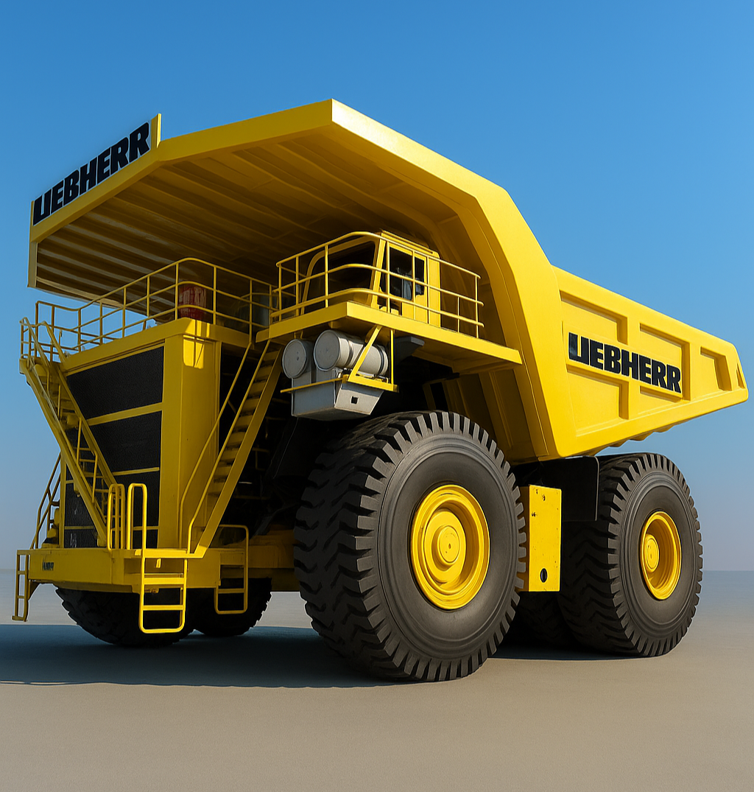

Liebherr T282B
O Liebherr T282B, Com praticamente as mesmas especificações do concorrente direto (797F da Caterpillar), o Liebherr custa entre 4 e 5 milhões de dólares. Com motor de 20 cilindros que gera 3600cv o Liebherr é o maior caminhão offroad da atualidade.
